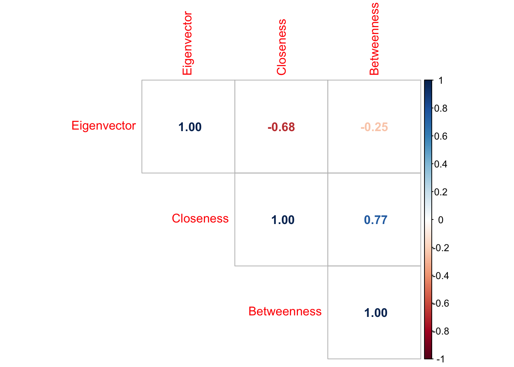
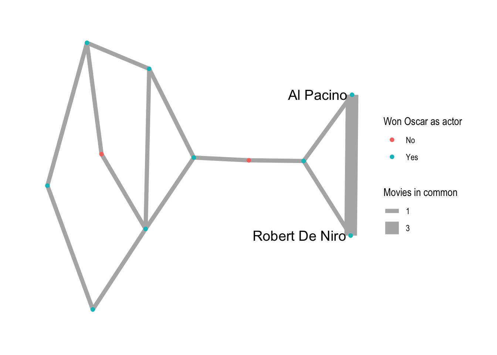
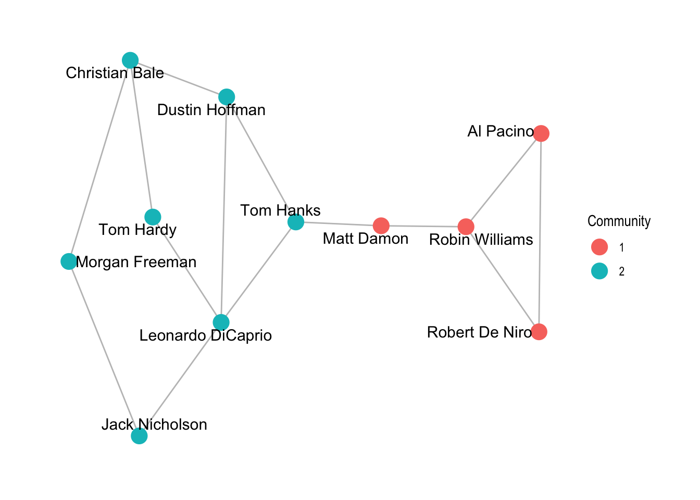

Warning: package 'igraph' was built under R version 4.5.2
Attaching package: 'igraph'
The following objects are masked from 'package:stats':
decompose, spectrum
The following object is masked from 'package:base':
union
library(ggraph)
Loading required package: ggplot2
library(ggplot2)library(dplyr)
Attaching package: 'dplyr'
The following objects are masked from 'package:igraph':
as_data_frame, groups, union
The following objects are masked from 'package:stats':
filter, lag
The following objects are masked from 'package:base':
intersect, setdiff, setequal, union
library(corrplot)
corrplot 0.95 loaded
The following code reads in data from my GitHub repo, and displays the summary of actors.
dataGitLink <-"https://github.com/shrutioak06/Shruti_DACSS690C/raw/main/hollywood.graphml"actors <-read_graph(dataGitLink, format ='graphml')V(actors)$wonOscar=ifelse(V(actors)$wonOscar==1,'Yes','No')summary(actors)
IGRAPH 0de9279 UNW- 11 14 --
+ attr: wonOscar (v/c), color (v/c), name (v/c), id (v/c), weight (e/n)
The code below shows the initial finalGraph plot before any of the changes or rules are applied to it (as reference to see the difference after analysis).
Eigenvector Closeness Betweenness person
Robin Williams 0.606705039 0.3571429 0.37777778 Robin Williams
Tom Hardy 0.014699527 0.3703704 0.01111111 Tom Hardy
Dustin Hoffman 0.034689773 0.4545455 0.17777778 Dustin Hoffman
Leonardo DiCaprio 0.037143649 0.4761905 0.33333333 Leonardo DiCaprio
Tom Hanks 0.072098921 0.5000000 0.53333333 Tom Hanks
Al Pacino 1.000000000 0.2702703 0.00000000 Al Pacino
Morgan Freeman 0.007860685 0.3125000 0.02222222 Morgan Freeman
Robert De Niro 1.000000000 0.2702703 0.00000000 Robert De Niro
Matt Damon 0.188206119 0.4347826 0.46666667 Matt Damon
Jack Nicholson 0.012477963 0.3703704 0.07777778 Jack Nicholson
Christian Bale 0.015873210 0.3846154 0.11111111 Christian Bale
Pepares a correlation plot with previous measures. The following results demonstrate that the closeness and betweenness are strongly positively correlated actors who are fewer steps from everyone else. Eigenvector moves in the opposite direction from both, moderately with closeness and weakly with betweenness.
corrPlot <-cor(DFCentrality[, c('Eigenvector', 'Closeness', 'Betweenness')])corrplot(corrPlot, method ='number', type ='upper')

HubNodes <- dplyr::slice_max(DFCentrality, order_by = Eigenvector, n =2)$personV(actors)$label <-ifelse(V(actors)$name %in% HubNodes, V(actors)$name, '')ggraph(graph = actors) +geom_edge_link(aes(edge_width =as.ordered(weight)), color ='grey70')+geom_node_point(aes(color =as.factor(wonOscar))) +theme_graph() +geom_node_text(aes(label = label), size =5, repel =TRUE) +labs(edge_width ="Movies in common", color ="Won Oscar as actor")
Using "stress" as default layout
Warning: Using edge_width for a discrete variable is not advised.

The plot above shows how Al Pacino and Robert De Niro have the maximum eigenvector score because both of them are connected to another highly-connected actor, and their closeness is among the lowest in the network. This shows being connected to someone important rather than central to the network.
The code below shows the finalGraph with just the hub nodes.
Warning in cluster_edge_betweenness(actors): Membership vector will be selected based on the highest modularity score.
Source: community/edge_betweenness.c:504
The results above demonstrate that there is clustering present, and is roughly twice as high as the average clustering of random networks. However, the results are not reliable because there are only 11 nodes and 14 edges, making the test harder to separate signal from noise.
Warning: `aes_string()` was deprecated in ggplot2 3.0.0.
ℹ Please use tidy evaluation idioms with `aes()`.
ℹ See also `vignette("ggplot2-in-packages")` for more information.

The plot above shows the best results. Edge betweenness (Girvan-Newman) produces the higher score and is plotted below the best result, splitting actors into 2 communities. The graph shows that the community structure is possible, but cannot confirm significant levels given how few nodes the network has.